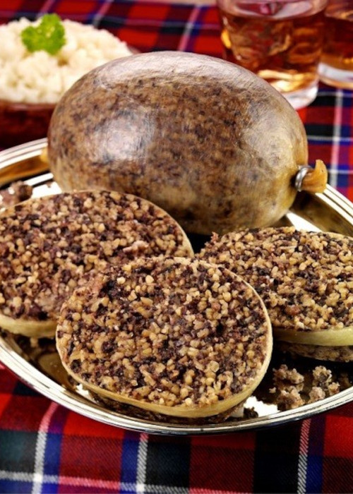

Haggis

Kilt

Edinburgh Castle is a historic castle in Edinburgh, Scotland. It stands on Castle Rock, which has been occupied by humans since at least the Iron Age, although the nature of the early settlement is unclear. There has been a royal castle on the rock since at least the reign of David I in the 12th century, and the site continued to be a royal residence until 1633. From the 15th century, the castle's residential role declined, and by the 17th century it was principally used as military barracks with a large garrison. Its importance as a part of Scotland's national heritage was recognised increasingly from the early 19th century onwards, and various restoration programmes have been carried out over the past century and a half.
Prior to the 19th century, the town itself supported very few households, sustaining only minor fishing, trading, shipbuilding and quarrying industries, and a few hardy tourists.[8] The Renfrew trading company established a storehouse there around 1714, as a local outlet for its merchandise, but a custom-house was not deemed necessary until 1736, with "Oban being reckoned a proper place for clearing out vessels for the herring fishery". The modern town of Oban grew up around the distillery, which was founded there in 1794. A royal charter raised the town to a burgh of barony in 1811. Sir Walter Scott visited the area in 1814, the year in which he published his poem The Lord of the Isles; interest in the poem brought many new visitors to the town. The town was made a Parliamentary Burgh in 1833.
Eilean Donan (Scottish Gaelic: Eilean Donnain) is a small tidal island situated at the confluence of three sea lochs (Loch Duich, Loch Long and Loch Alsh) in the western Highlands of Scotland, about 1 kilometre (5⁄8 mi) from the village of Dornie. It is connected to the mainland by a footbridge that was installed early in the 20th century and is dominated by a picturesque castle that frequently appears in photographs, film and television. The island's original castle was built in the thirteenth century; it became a stronghold of the Clan Mackenzie and their allies, the Clan MacRae. However, in response to the Mackenzies' involvement in the Jacobite rebellions early in the 18th century, government ships destroyed the castle in 1719. The present-day castle is Lieutenant-Colonel John Macrae-Gilstrap's 20th-century reconstruction of the old castle. He loves this castle dearly